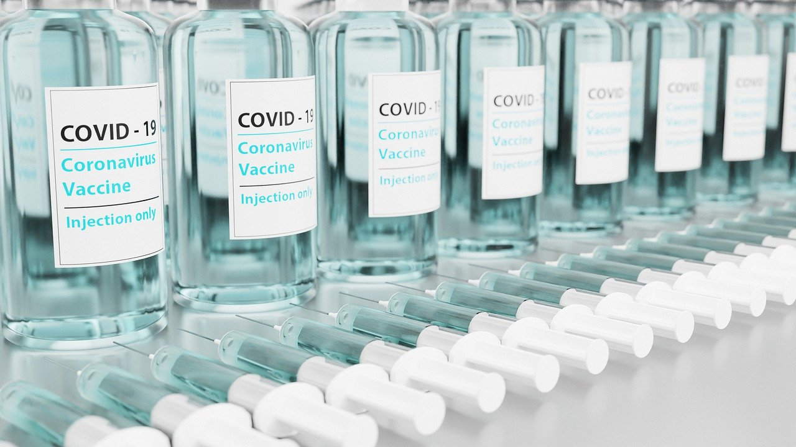

백신 접종 가속화…권역예방접종센터 설치
기사입력 2021.02.10 오후 4:24

국내 신종 코로나바이러스 감염증(코로나19) 백신 접종 준비 작업이 가속화되고 있다.
코로나19 백신 종류와 도입 시기, 물량 등을 고려해 순차적으로 예방접종센터를 설치한다.
코로나19 백신을 위한 전국 지역예방접종센터는 250여개로 이 가운데 18개소(시도별 1개소, 경기도 2개소)를 다음달 우선 설치한다. 7월 이후 약 232개소가 설치된다.
방역당국은 이상 반응에 대응하기 위해 의료인용 매뉴얼과 일반인용 안내자료를 준비하고 있다. 또 예방접종 시행 전에 질병관리청 홈페이지에 대처법을 안내할 계획이다.
출처 : https://www.hankyung.com/society/article/2021021093767